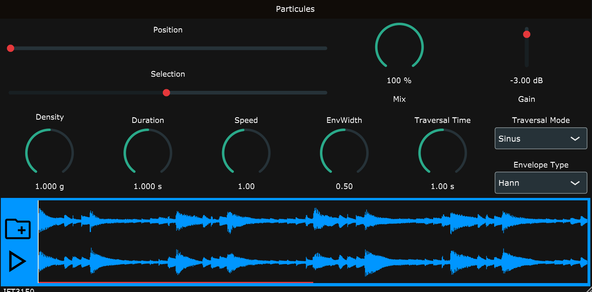
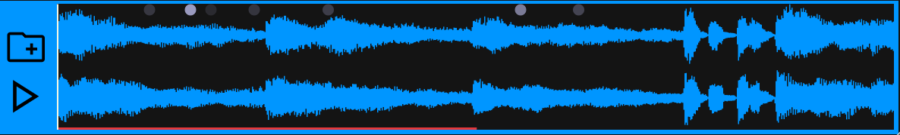

A. INTRODUCTION
GRANULARITÉ
Pierre Schaeffer est un compositeur et musicologue français qui est connu pour avoir travailler sur ce qu'il appelait la musique concrète en 1948. La musique concrète est une nouvelle forme d'expression artistique qui utilise des sons enregistré comme support principal. Il a aussi travaillé sur de nombreuse théorie de transformation du signal sonore. Parmi toutes ses théories, en ressort une qui est celle de la granularité du son. Pour Pierre Schaeffer, la notion de "grain", désigne l'unité perceptible la plus petite possible qui compose un son. L'idée est qu'un son est composé d'une myriade de particules sonores les unes à la suite de l'autre.

C'est sur ce principe et cette définition que nous nous baserons pour développer le synthétiseur granulaire.
LES TROIS APPROCHES DE LA SYNTHÈSE GRANULAIRE
Ross Bencina est musicien compositeur, interprète et aussi dévelopeur de logiciels. Sur son site personnel, il se dit être intéressé par la musique improvisée. Il a notamment écrit des articles sur la création de logiciels créatifs. En 2001, il écrit un article dont le sujet porte sur le principe de la synthèse granulaire. C'est sur cet article que j'ai basé mon travail pour comprendre le fonctionnement de la synthèse granulaire. Cela m'a permit de choisir une méthode pour mettre en place la synthèse granulaire.
L'auteur explique que la particularité de la synthèse granulaire est qu'elle a la caractéristique d'être un type de synthèse dont résulte des sources sonores à l'aspect sonore relativement organique, contrairement à d'autres type de synthèse sonores. L'auteur parle de l'extraction des grains et de leur reconsitution. La métaphore qu'il utilise pour parler de l'ensemble des grains extrait puis recomposé est un le nuage sonique.
Selon lui ce qui va définir les caractéristiques principal de notre synthèse sera la manière avec laquelle on va extraire puis recomposer tous ces grains. On a donc deux paramètres importants à prendre en compte pour approcher la synthèse.
0 Derrière le concepte de la granularité, on comprend que le temps est la caractéristique fondatrice sur laquelle repose cette synthèse. On se pose alors la question : Combien de temps doit durer un grain ? Et aussi : A quelle moment procéder à l'extraction d'un grain ?
Ross répond à ces questions en proposant 2 méthodes pour calculer la temporalité des grains :
-
Méthode asynchrone :
La distribution des grains est déterminée de manière aléatoire ou par l'utilisateur, sans règle particulière. On parle dans ce cas de la densité des grains : le nombre de grains par seconde.
-
Méthode synchrone :
La distribution des grains est déterminée selon un interval régulier pour créer un son périodique ou pitché.
L'auteur distingue trois approches pour mettre en oeuvre un tel système en temps réel, chacune ayant leur version sous forme synchrone ou asynchrone.
-
Par ligne a retardement
Cette méthode consiste à prendre une entré en temps réel et de stocker son contenu dans un effet à retardement puis de le restitué dans un second temps. Les grains reconsitutés peuvent être mélanger avec la partie du signal entrant pour créer une addition. Cela peut être implémenter concrètement avec un buffer circulaire retardé.
-
Par stockage d'échantillons
Ici la génération des grains se fait à partir d'un fichier chargé au préalable. Le principe est analogue à la synthèse à table d'onde.
-
Par synthèse de grain synthétique
Dans cette méthode, la source sonore sur laquelle va se baser la synthèse granulaire est opère sur des sources sonore synthétique générés par oscillateurs.
Après étude de cet article, nous pouvons choisir une méthode qui nous couvient. Le plugiciel sera dans le mode asynchrone et utilisera la forme par stockage d'échantillons.
B. FONCTIONNEMENT DU PROGRAMME
VUE CONTROLEUR ET MODEL
Maintenant, nous avons les informations pour commencer à programmer. On a vu que JUCE proposait au départ 2 classes. Le PluginProcessor qui fait office de Controleur et le PluginEditor qui sera le gestionnaire de la Vue du plugiciel. JUCE nous implicite de baser notre application sur le patron de conception MVC. Dans ce cas, il nous manque le Model.
Dans JUCE Framework, on a une structure de donnée très importante qui s'appelle AudioProcessorValueTreeState. Cette structure de donnée permet d'encapsuler des valeurs qui pourront être partagées, sauvegardées, rappelées, etc. Avec cette structure de donnée, qu'on résumera à APVTS, nous pouvons charger des valeurs par défaut par exemple et initialiser le logiciel.
Malheureusement, cette structure de donnée ne fonctionne pas avec les listeners qui sont accrochés aux composants de l'interface graphique de JUCE. Au cours du développement, j'ai donc ressenti le besoin de créer une classe auxiliaire qui conserve l'état temporaire et interne. J'ai donc créer la classe StateParameters. Cette classe est passé en pointeur dans tous le system. Elle prévoit de garder en mémoire toutes les valeurs utiles au fonctionnement du systeme avec une série de Getters et Setters.
Il est vrai que cela peut sembler redondant. Avec le recul, une solution plus élégante sera de refactoriser le code pour composer la classe StateParameters par un APVTS et séparer la partie rappel de paramètres par défaut de la mise à jours des valeur temporaires qui consitute l'état courrant du système.
Le StateParameter est unique, il pourrait être un Singleton, il sert à maintenir la communication entre la partie Controller et la partie de Vue du système.
INTERFACE GRAPHIQUE ET GESTION D'EVENEMENTS
Il n'y a pas de logique à travers le code couleur qui est mis en place. Le but était surtout que l'interface soit avant tout compréhensible et facilement utilisable pour quiconque souhaite utiliser le logiciel.
Il y a un principe de correspondance entre la position des Slider de position et de Selection avec le pointeur blanc vertical et rouge horizontal sur la forme d'onde.

La partie graphique est organisé en section. Les sections sont appelées Frame dans mon projet. Elles divisent la fenêtre en 3. La partie du bas correspond à la visualisation de l'état général du système. Le fichier audio qui est chargé et le nombre de grain actifs sont visible à l'écran. Les deux sections du haut sont réservés aux contrôles pour l'utilisateur. La partie du haut concerne la partie macro (à l'échelle du synthétiseur). La partie basses contrôles concerne la partie micro (à l'échelle des grains).
TRAITEMENT DU SON
Suite à l'étude du principe de la granularité, on comprend que l'on va avoir besoin de 3 classes pour mettre en oeuvre le comportement désiré. Ces 3 classes forment ensemble le controleur en entier.
-
GranularEngine :
Cette classe est la classe la plus responsable du Controleur. Il va être charger d'instancier et de coordonnée tout le monde. Il va aussi être en charge des paramètres de macro gestion du synthétiseur comme l'enveloppe générale du synthétiseur par exemple.
-
Scheduler :
Cette classe lui est le responsable du nuage de grains. Il va récupérer les données provenant du StateParameter et il va s'en servir pour procéder à la création et la destruction des grains.
-
Grain :
Grain est la dernière classe qui compose le controleur. Cette classe va garder en référence l'adresse du fichier chargé en mémoire fournie par le StateParameter, et avec un calcul de position, il va être déterminé la position de l'échantillon à prélevé selon un certain moment.
GRAIN ENGINE
Le GrainEngine est la top classe du controleur. Elle instancie les objets DSP (Digital Signal Processing) fourni par JUCE. Ces DSP sont des objets qui encapsule un certain traitement souhaité. Le traitement que j'utilise est celui du volume de sortie, appelé Gain. Cela est utile pour offrir à l'utilisateur un moyen de controler le volume selon le niveau sonore du fichier chargé.
Voici un exemple de comment fonctionne les DSP dans la fonction la plus importante du GrainEngine.
Par ailleurs, on constate que tout comme la fonction processBlock du PluginProcessor, la fonction process du GrainEngine utilise un objet de type juce::AudioBuffer qui est passé en référence dans la signature de la fonction. C'est parce qu'il fonctionne de manière similaire. Il prend la structure de donnée qui contient les échantillons à traiter et les remplis avec les samples qui sont dans le fichier chargés. Comme nous sommes dans le cas d'un synthétiseur granulaire asynchrone à stockage d'échantillons le buffer qui est envoyé sera vide. Il ne s'agit pas de la même structure de donnée que celle du fichier. On rempli le buffer à sortir par les échantillons contenu dans le fichier sans altérer le buffer de fichier car on veut pouvoir relire les échantillons autant de fois que désiré.
SCHEDULER ET L'INCREMENT
Cette fonction est la plus importante du Scheduler. C'est ici qu'on décide quand créer un nouveau grain, quand avancer les grains existant en terme de position de lecture et quand on détruit ceux que l'on considère comme inactif. Et surtout c'est ici qu'on récupère les données de tous les grains pour les sommer dans le buffer de sortie.
On peut constater qu'on a transformer AudioBuffer en AudioBlock mais en réalité il s'agit de la même structure de donnée sauf que AudioBlock est optimisé pour fonctionner avec les DSP. AudioBlock pointe vers l'adresse AudioBuffer. Donc lorsqu'on appelle la fonction getChannelPointer, il va nous renvoyer le bon pointeur.
Maintenant si on met en relation les deux fonctions principales du GrainEngine avec le Scheduler, alors on constate qu'on a 3 boucle FOR. C'est la manière conventionnelle avec laquelle on itère dans un buffer d'échantillon. On appelle la fonction du Scheduler sur le nombre d'échantillon dans le buffer. En suite on itère sur le nombre de Grain existant dans le Scheduler. Puis sur chaque grain donnée, on itère sur chaque canal de sortie disponible par le système.
Ca fait beaucoup de boucle-FOR imbriquées. Alors pour éviter de trop prendre de ressources, j'utilise un maximum les pointeurs pour alléger la charge de travail.
GRAIN
Un grain lors de sa création va prendre en référence le buffer du fichier chargé par l'utilisateur et va aussi considérer les valeurs de positionnement qu'a choisi l'utilisateur. Son rôle est de déterminer où dans le fichier procéder à l'extraction, dans le respect des règles édifiées par Ross Bencina dans son article.
Ici c'est le dernier maillon de la chaine principal qui constitue la synthèse granulaire. On récupère les données des échantillons à des positions relatives à celui du grain à un temps données. On calcule aussi l'enveloppe avec laquelle on veut exprimer le grain pour éviter la distortion de phase et les "cliques" lors de la sommation des échantillons.

Comme il l'est montré ci-dessus part Eduardo Miranda dans son livre Computer Sound Design, nous avons interet à calculer l'enveloppe pour chaque grains à sommer pour éviter les sons parasites. Pour ce faire JUCE propose un objet DSP appelé WindowingFunction<FloatType>. Cet objet est à la base pensé pour être utiliser lors de FFT dans le traitement du signal, ce qui diffère de notre utilisation. Quand on explore à l'interieur de la classe fourni par JUCE, on constate qu'il est aussi pensé pour appliquer l'enveloppe en une seule fois sur une structure de donnée avec une boucle-FOR, ce qui ne fonctionne pas avec la configuration actuelle. Pour résoudre ce problème, j'ai extrait les fonctions d'enveloppe de cette classe pour les adapter dans une version qui est calculé étape par étape en fonction d'un coefficient de positionnement. En retour, la méthode "applyEnvelope" retourne un coefficient multiplicateur qui simule ce qu'aurait fait WindowingFunction sur une structure de donnée. Ceci nous permet de répartir sur la duréee la charge de travail et nous permet de continuer à travailler avec des pointeurs et des calculs de positionnement. De la sorte, on est pas obligé de copier des échantillons localement, ce qui économise de l'espace et évite plus de procédure.
Additionnellement, on met en place des manière de vérifier les limites et les exceptions dans le prélèvement des grains. Par exemple que ce passe-t-il si pendant l'extraction d'un grain, le calcul de sa position en fonction de sa durée fait que le grain doit extraire dans échantillons qui vont au delà de la limite du buffer du fichier ? Dans ce cas de figure, j'ai pris la décision de boucler la position du grain même si cela créer un soudain changement de son. C'est un choix qui est débatable.
C. FONCTIONNALITÉ
IMPORTER UN FICHIER SON
Il y a 2 façon possibles pour importer un son. La première est le glisser déposé à la souris manuellement. Il faut relacher le fichier sonore sur la région de la forme d'onde pour que cela fonctionne. La seconde façon est en cliquant sur le bouton de l'image avec l'icon du dossier à gauche de la forme d'onde. Cela appelle une fonction lambda qui ouvre une fenêtre du système d'exploitation et demande à l'utilisateur de naviguer et selectionner le fichier qu'il souhaite.
RESAMPLING ET INTERPOLATION
Une fois que l'utilisateur charge son fichier, il y a des opérations de validation qui doivent s'exécuter pour être sûr que le fichier soit valide, que le fichier ne soit pas trop lourd (max 1min30), que le fichier soit au bon format (mp3, wav et aiff).
Une fois que cette première vérification est faite, ensuite on procède à un resampling du fichier selon les paramètres courant du fichier. Car on veut que lorsque l'on compte la position des échantillons dans le buffer nous soyons au bon endroit dans la structure de donnée. Par exemple, le système est configuré en 44100hz pour la fréquence d'échantillonnage et que le fichier chargé est en 88200hz alors si nous estimons par calcul le temps écoulé selon la position de l'échantillon, nous pourrions avoir des surprises.
Le calcul de l'interpolation des frequences d'échantillonnage se fait grâce à l'objet LagrangeInterpolator.
DESSINER LA FORME D'ONDE
Une fois que l'interpolation est fait et que le StateParameter a pu mettre à jour son buffer, il y a un Listener qui appelle la fonction dans une classe appelé ThumbnailComponent. Cette fonction va prendre le contenu du nouveau buffer et automatique appeler les fonctions de base pour peindre la forme d'onde dans la région prévue.
MODULATION DE LA POSITION
Lorsqu'on procède à la granulation du fichier sonore, on se réfère aux positions mises en place par l'utilisateur. C'est à dire les données relatives à la position et la selection. Sur l'interface graphique, on peut apercevoir une combobox qui porte le nom de Traversal Mode. Cette option propose différente modulation qui va s'appliquer sur la région de la selection tout entière. Ce qui va donner pour résultat une extraction qui va moduler en fonction de la fonction mathétique appliqué.
Parmi ces modulations, on a la fonction random, qui va donner pour résultat que le grain va être prélevé à une position aléatoire dans la selection. On a aussi la fonction carré, qui va faire en sorte que le prélevement se fera aux 2 extrémites de la selection. Etc.
La sélection détermine seulement, la région du fichier où un grain peut être créer. Ce qui signifie qu'un Grain peut dépasser la région de selection si il a une grand durée de vie par exemple.
PHASE VOCODER
Pour modifier la vitesse de lecture du grain, la manière la plus approrpié est d'utiliser des algorithmes de type Phase Vocoder. Ce type d'algorithme sont utilisé pour modifier la hauteur et ou la durée d'un signal sonore. Le principe repose sur l'application d'un processus appeler STFT (Short Time Fourier Transfrom). Ce processus peut modifier la fréquence d'échantillonnage d'une source sans changer la hauteur (pitch shift) ou faire l'inverse c'est à dire modifier la hauteur pour la même fréquence d'échantillonnage (time stretch).
Pour mettre en place le phase vocodeur, il faut appliquer un fenêtrage du signal, pour cela on applique l'objet juce::WindowingFunction<FloatType> pour décomposer le son en plusieurs fenêtre de quelques millisecondes. Et on applique la transformé de Fourier sur chacune d'entre elles. Les phases des fréquences des coefficients de Fourier sont alors modifiées pour modifier le taux d'échantillonnage ou la hauteur du signal sonore. En suite, on recombine les fenetres modifiées tout en conservant l'enveloppe.
Malheureusement, la version de FFT implémenté dans JUCE est marqué comme étant une version non optimale. Je me suis donc permis d'aller chercher une librairie externe écrite en C++ appeler AudioFFT sur GitHub et qui permet d'appliquer la fonction Real-to-Complex-Forward et son inverse Real-to-Complex-Inverse.
La modification de la vitesse n'est pas présente actuellement dans le projet tel quel à la date du 27 Avril 2023. L'implémentation d'une librairie de Transformée de Fourier écrite de zéro ainsi que l'écriture d'un DSP personnalisé d'un Phase Vocoder nécessiterait du temps supplémentaire.
Un autre nom pour désigner cette méthode est PSOLA. Le principe est le même, on décompose le signal en segment qui se chevauche et on procède au traitement sur le domaine fréquenciel (FD-PSOLA), en utilisant la Transformée de Fourier ou sur le domaine temporel (TD-PSOLA).
VISUALISATION DE L'EXTRACTION
Donner un retour visuel à l'utilisateur est important pour réaliser exactement ce qui est entrain de se passer en temps réel. C'est pourquoi j'ai décidé de consacrer un peu de temps à la visualisation des grains extraits. Toujours dans un soucis d'optimisation, j'ai décidé d'intégré une classe interne aux grains. Cette classe s'appelle GrainPoint, elle est chargé de traiter l'opacité et la position dans le fichier sonore. On envoit le vecteur qui est composé de tous les grains à la Vue qui est chargé de lire la position de tous les grains en temps réel.

Le désavantage de cette manière de faire c'est que l'opacité des points sont directement lié avec le volume de l'échantillon en sortie. Ce qui signifie qu'il est possible qu'il y ait un grain qui extrait un échantillon qui est de faible volume dans le fichier son et donc il serait retourné avec une faible opacité en retour visuellement. Il serait plus judicieux que les GrainPoints soient au maximum de leur opacités indépendament de la valeur de l'échantillon lu mais plutôt en fonction de leur enveloppe personnelle.